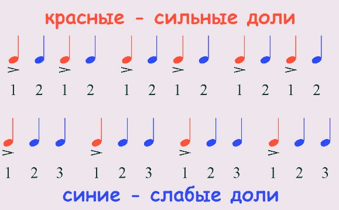
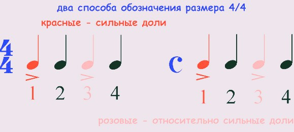

Урок 5. Сильные и слабые доли.
Теория
В музыке доля — это единица измерения ритма, определяющая пульсацию в такте.
- Сильная доля — это первая доля такта, она звучит более акцентировано и выделяется среди других.
- Слабые доли — все остальные доли такта, они звучат мягче и менее выраженно.
В простых размерах (например, 2/4, 3/4, 4/4) сильная доля всегда первая, остальные — слабые.
Ритмический рисунок музыки строится на чередовании сильных и слабых долей. Сильная доля помогает музыкантам держать темп и чувствовать структуру произведения.
В марше обычно подчёркивается сильная доля, а в вальсе — первая из трёх долей.
Упражнения
- Распознавание доли: Определите, какая доля сильная, а какая слабая (Марш (2/4): первая доля — сильная, вторая — слабая; Вальс (3/4): первая доля — сильная, вторая и третья — слабые; Четырёхдольный размер (4/4): первая доля — сильная, третья — относительно сильная, вторая и четвёртая — слабые).
- Ритмическое повторение: Простучите или пропойте ритм, выделяя сильные доли (Сильная, Слабая, Слабая, Сильная, Слабая, Слабая).
Аудио-примеры
Пример марша (2/4):
Пример вальса (3/4):
Визуальные примеры
Схема сильных и слабых долей в такте:

Обозначение долей в размере 4/4:
